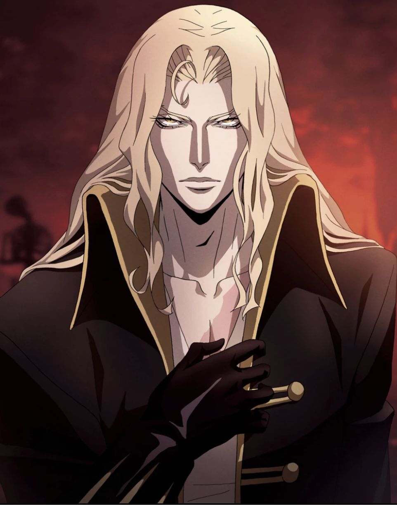
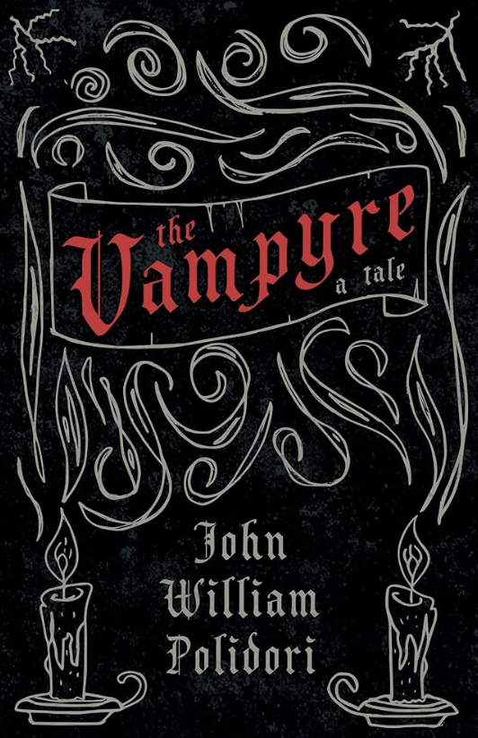

So R Vampires
About vampires

A vampire is a mythical creature that subsists by feeding on the vital essence (generally in the form of blood) of the living. In European folklore, vampires are undead humanoid creatures that often visited loved ones and caused mischief or deaths in the neighbourhoods which they inhabited while they were alive. They wore shrouds and were often described as bloated and of ruddy or dark countenance, markedly different from today's gaunt, pale vampire which dates from the early 19th century.

The charismatic and sophisticated vampire of modern fiction was born in 1819 with the publication of "The Vampyre" by the English writer John Polidori; the story was highly successful and arguably the most influential vampire work of the early 19th century. Bram Stoker's 1897 novel Dracula is remembered as the quintessential vampire novel and provided the basis of the modern vampire legend, even though it was published after fellow Irish author Joseph Sheridan Le Fanu's 1872 novel Carmilla. The success of this book spawned a distinctive vampire genre, still popular in the 21st century, with books, films, television shows, and video games. The vampire has since become a dominant figure in the horror genre.